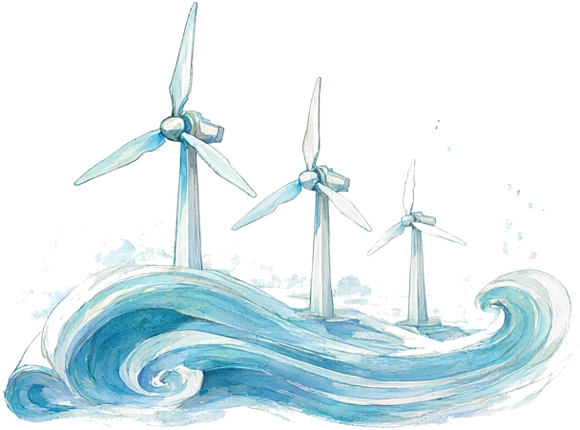
研究中 · 源码私有PhysCast
物理约束的生成式风场预测
打开这一页展开

研究中 · 源码私有
PhysCast
物理约束的生成式风场预测
打开这一页展开ZJU 浙江大学博士在读
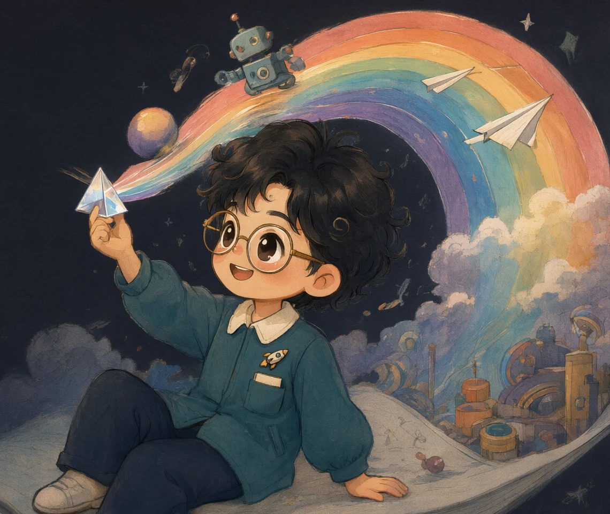
从物理研究到科学影像，每一页都有自己的颜色。
7 个研究与创作项目

物理约束的生成式风场预测
打开这一页展开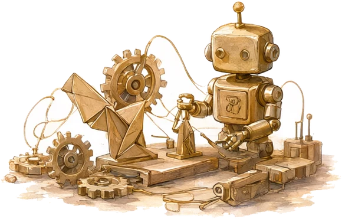
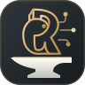
持续开发 · 源码私有让工程意图，走向可检查的设计过程
打开这一页展开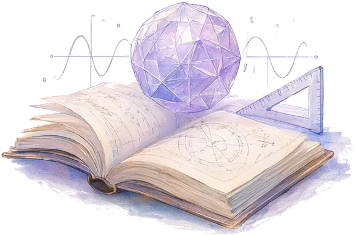
面向万象的交互可视化生成器
打开这一页展开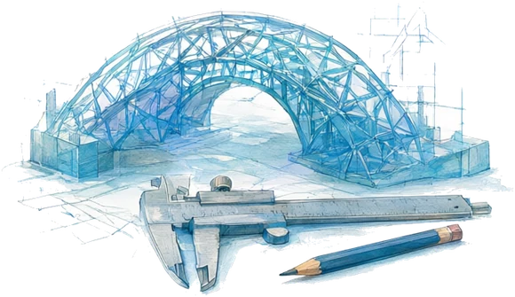
设计之后，继续计算与验证
打开这一页展开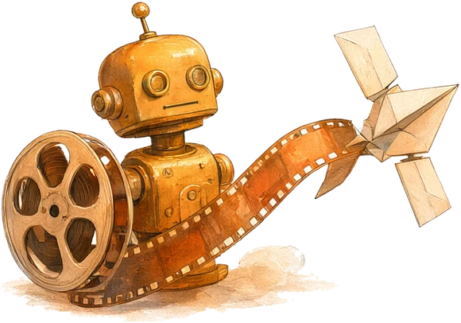
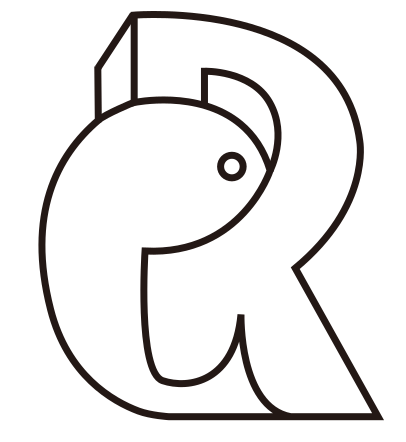
系列创作 · 开源把 AI 的演进，讲成可以看见的故事
打开这一页展开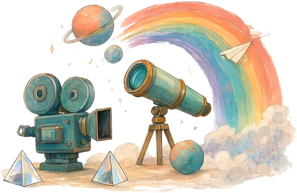
把科学问题，变成值得追问的画面
打开这一页展开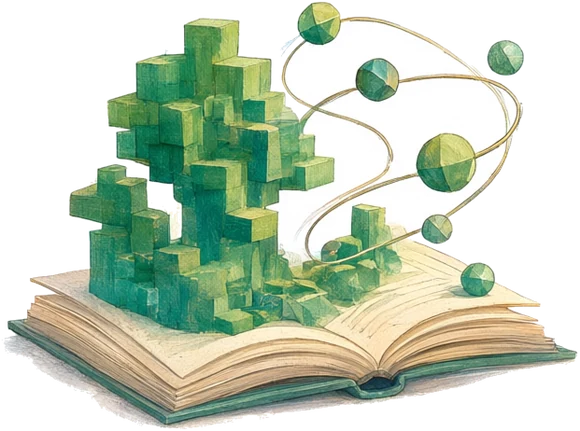
让算法和结构，有直观的表达
打开这一页展开用工具解决问题，用作品说明能力。
从观测与模型，到可以检查的证据。
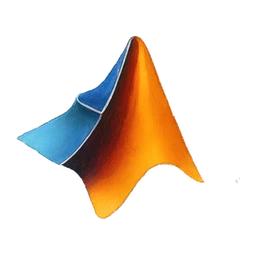
MATLAB让工具协作，让想法成为可运行的作品。
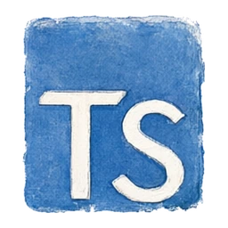
TypeScript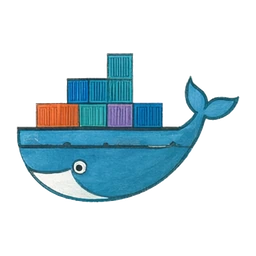
Docker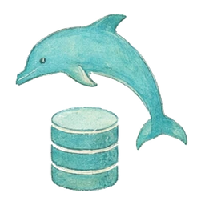
MySQL用图像、动画和故事解释复杂问题。
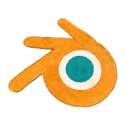
Blender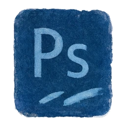
Photoshop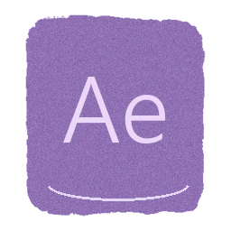
After Effects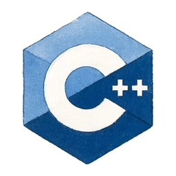
C++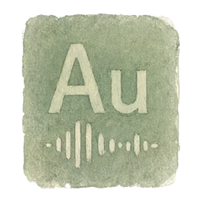
Audition研究、构建、创作，慢慢长成自己的风景。

卡片暂不可用，等待下一次更新。

卡片暂不可用，等待下一次更新。

卡片暂不可用，等待下一次更新。

卡片暂不可用，等待下一次更新。
基于最近 7 天的真实编码记录，具体时间以卡片及更新状态为准；更新失败时保留最近一次快照。

卡片暂不可用，等待下一次更新。

卡片暂不可用，等待下一次更新。
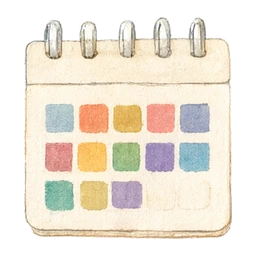
打开贡献动画与完整日历展开卡片暂不可用，等待下一次更新。

卡片暂不可用，等待下一次更新。

卡片暂不可用，等待下一次更新。
每日任务更新真实记录；以卡片时间判断时效，来源暂不可用时保留上次成功快照。
我是 rainbow鱼，浙江大学博士在读。
在 AI、物理仿真与工程之间探索，也把复杂知识做成可视、可交互的作品。研究需要严谨，表达可以有想象力。